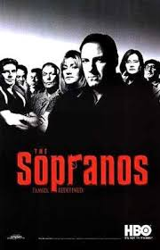

Los Soprano (en inglés The Sopranos) fue una serie de televisión estadounidense creada y producida por David Chase y HBO. La serie se estrenó en Estados Unidos el 10 de enero de 1999 por el canal de televisión por cable HBO, que la emitió ininterrumpidamente hasta su desenlace, el 10 de junio de 2007. La trama de la serie gira en torno al mafioso de Nueva Jersey Tony Soprano (James Gandolfini) y las dificultades que enfrenta tanto en su hogar como en la organización criminal que dirige. A su vez, la serie también se centra en la historia de los personajes cercanos a Tony, especialmente su esposa Carmela (Edie Falco) y su sobrino y protegido Christopher Moltisanti (Michael Imperioli).
El rodaje de la serie se hizo entre los Silvercup Studios de Nueva York y diversos escenarios del estado de Nueva Jersey. Los productores ejecutivos a lo largo de su emisión fueron Chase, Brad Grey, Robin Green, Mitchell Burgess, Ilene S. Landress, Terence Winter y Matthew Weiner.
Un éxito crítico y comercial, Los Soprano es una de las series por cable económicamente más exitosa en la historia de la televisión y frecuentemente ha sido descrita por la crítica como una de las mejores series de televisión de todos los tiempos. La serie destaca por su alto nivel de calidad en todos los aspectos de producción y ha sido especialmente reconocida por su guion y por las actuaciones de sus actores principales. Los Soprano ha sido acreditada por brindar un gran nivel artístico a la televisión media y allanar el camino para el éxito de muchas series de ficción que le siguieron. También ha ganado numerosos premios y reconocimientos, entre ellos, veintiún Premios Emmy y cinco Globos de Oro. En 2009 fue elegida la mejor serie de los años 2000 por la publicación The Hollywood Reporter. Además de los elogios y los premios, la Writers Guild Association la seleccionó como la serie mejor escrita de la historia en el top de "Las 101 series mejor escritas de la historia de la TV". En septiembre de 2016 la revista Rolling Stone elaboró la lista de "Las 100 mejores series de TV de todos los tiempos", donde Los Soprano ocupó el primer lugar.
Elemento básico de la cultura popular estadounidense del siglo XXI, Los Soprano ha sido objeto de parodias, controversias y análisis, y ha dado lugar a libros, un videojuego, exitosas bandas sonoras y una gran cantidad de merchandising.4 Varios de los actores y miembros del equipo de rodaje eran desconocidos para el público general, pero sus carreras experimentaron un gran éxito tras Los Soprano.